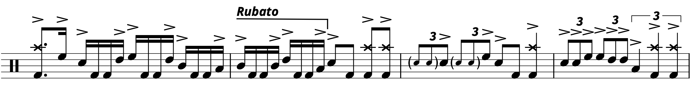

Transcription: “Voyager (Prelude & Liftoff)” — Vinnie Colaiuta with Bill Meyers
Posted on July 10, 2022

The cuts don’t get much deeper than this, do they?
I was introduced to this album by a different drummer, Jeff Porcaro. The Musicians Institute in Los Angeles has done the world a public service by sharing footage of a clinic/Q&A that Jeff did with the school back in 1986:
You should watch it if you haven’t already. It’s valuable to hear his perspective on various topics, even if these topics are dated. Dated, but also fascinating. Case in point: toward the end of the video, Jeff talks about the horrors of direct–to–disc recording.
If you don’t know, direct–to–disc recording involves sending the signal of the music straight from the mixing desk to a record lathe that cuts the master vinyl as the band plays live. Direct–to–disc is typically used in the context of bypassing reel–to–reel tape to improve fidelity.
Before magnetic audio tape became mainstream circa 1950, pretty much all music was recorded direct–to–disc. But this was in the era of what we now call singles: 78 RPM discs with 10 minutes of music total. If you want to record a 45–minute LP direct–to–disc, you and the rest of the musicians on your album have to rip through every side of the record live in the studio, playing each song one after another in a single glorious take. There’s no opportunity to rerecord or even to adjust levels, so if something sounds wrong, the band has a tough decision to make regarding whether or not they want to do the whole side over again from the top.
Now, this is just my opinion, but this seems like a miserable way to record an album, especially in the era of multitracking. Without a doubt, magnetic tape has its problems, especially when sending music from one tape machine to another, which will degrade the signal (generation loss). But most people back in the day just learned to deal with it.
Anyhoo, Jeff brings up a then–upcoming direct–to–disc album by keyboard player Bill Meyers, with Vinnie Colaiuta on drums. Meyers is more of a bigwig arranger than a pop artist — in the words of Jeff, the music on the album is “out there stuff”. Jeff also declares it to have the best drumming he ever heard from Vinnie (as of 1986).
I tracked down the album, Images. After looking into it, I don’t think this was actually a direct–to–disc recording, but rather a live digital studio recording. In terms of fidelity, I don’t know what the advantages are of doing a digital recording live. It depends on what equipment was being used. Early digital audio recorders still used magnetic tape, storing 1s and 0s instead of an analog of the signal. Some of these tape formats allowed for easy splicing. Others, not so much.
Also, Bill has a lot of players on this album, and there comes a point where so many musicians get involved that it just becomes easier to do it all live. So I’m guessing that the songs were played live but different takes of each tune were spliced together to form the album, preventing the need to tear through each side of the record from start to finish.
Now that we covered all that, I can say that this is “out there stuff”, but it’s also a very good–sounding album — some of the best fidelity to come out of the catastrophe that is 80s music. Vinnie’s playing is top–notch, and on the third tune “Voyager”, he gets the opportunity to show off with a 16–bar drum solo.
The track opens up with what I call renaissance fair music, apparently much of it based on Symphonie No. 1 by Louis Vierne. This isn’t all that uncommon for progressive styles in the 70s and 80s (think of The Alan Parsons Project, Emerson Lake & Palmer, and of course “Stairway to Heaven”).
Some of the intro is honestly quite beautiful. Other parts… don’t quite work for me. After the “Prelude” section, the song launches into a rather greasy shuffle around two minutes and thirty seconds in. The tempo is fast and the swing is hard. At 4:15 we get the drum solo, which is built with a vamp from the rest of the band that goes something like this:
Most of the drumming in the solo uses 8th note triplets, with a bit of a linear flair and some intense flam licks — there’s heavy use of the flam drag and an interesting take on a tap five–stroke roll. Tap rolls start with the accented single in front of the doubles (i.e. R LLRR instead of RRLL R), but Vinnie puts a flam on the accent, creating something that seems like a mixture of the flam drag and the tap five–stroke roll.
I have no idea what to call a lick like that. Flam Five is already a thing: a five–stroke roll with a flam on the first note of the roll. “Flam Tap Five” is kind of confusing, since the flam tap is an entirely separate rudiment that has nothing to do with rolls. Maybe “Flammed Tap Roll”?
Moving on, the other big thing to talk about are these straight 16th note phrases Vinnie dishes out. They’re pretty disorienting, especially since the linear playing obscures where the beat is.
The finale has a big run of 16th note quad fills, played with the kick drum double in the middle of the beat:
I am very wary of using straight 16ths in a swung context; most of the time when I hear them, they don’t sound nearly as good as the drummer probably imagined they would. But the accent pattern of the tom hits creates a hard shuffle feel, and so I ultimately feel like this is a neat changeup.
It’s also quite difficult to play at this tempo. Vinnie flubs it a bit at the end, but hey... it happens to the best of the best of us.
“Song” on Songwhip.
Tags: 2022 • Transcription • Bill Meyers • Vinnie Colaiuta